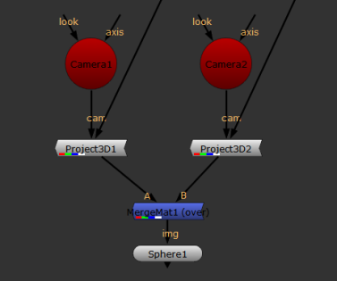

随着 着色器 菜单的 MergeMat 节点，您可以将两个着色器节点组合在一起，使用合成算法，如 没有 , 替换 , 结束 ,和 钢网 。MergeMat 节点对于组合多个 Project3D 节点特别有用，允许您组合相互投影到 3D 几何体上的 2D 图像。
| 1。 | 选择 3D > 着色器 > MergeMat 在要组合的两个着色器节点之后添加 MergeMat (over) 节点。 |
| 2. | 将 MergeMat 节点连接到 Img 要投影图像的 3D 对象的输入。 |
| 3. | 将着色器节点连接到 MergeMat 节点 一个 和 B 输入。 一个 引用前景元素，并且 B 到背景元素。 |
例如，如果您想将两个 Project3D 节点组合起来，并将它们的结果组合到一个球体上，您的节点树将如下所示:

| 4. | 从 操作 下拉菜单中，选择要如何将两个着色器节点的结果组合在一起: |
• 仅使用输入 B 在复合材料中，选择 没有 .
• 仅使用输入 一个 在复合材料中，选择 替换 .
• 到复合输入 一个 过输入 B 使用蒙版，选择 结束 .
• 使用输入 B 在遮罩区域之外，选择 钢网 .
• 使用输入 B 在遮罩区域内，选择 面具 .
• 添加输入 B 要输入 一个 ,选择 加 .
• 使用输入 一个 如果它大于输入 B 或者使用输入 B ,选择 最大 .
• 使用输入 一个 如果它小于输入 B 或者使用输入 B ,选择 Min .
| 5. | 对于操作 (如 结束 ) 需要 alpha 通道 (屏蔽)，从 alpha 中选择用于 alpha 的通道 通道 下拉菜单。 |
|
|